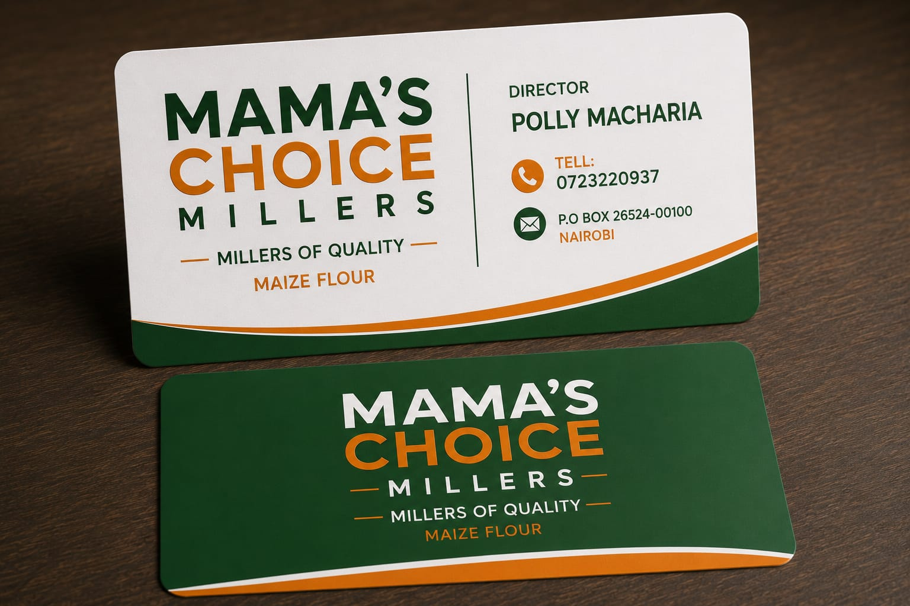

01
EVERYDAY STAPLE
Maize Flour
Carefully milled maize flour for dependable everyday meals, with quality and consistency in every pack.
PRODUCT ENQUIRY →MAMA'S CHOICE MILLERS · SINCE 2019
We produce safe, nutritious and high-quality maize and porridge flours for the everyday needs of Kenyan families.
WELCOME TO MAMA'S CHOICE
Started in 2019, Mama's Choice Millers is built around a simple promise: to deliver healthy food using modern manufacturing technology.
From grain selection to the finished product, we work to maintain the quality, nutrition and consistency that Kenyan families deserve.
DISCOVER OUR STORY →OUR PRODUCTS
Quality products made with the needs of Kenyan households in mind.
EVERYDAY STAPLE
Carefully milled maize flour for dependable everyday meals, with quality and consistency in every pack.
PRODUCT ENQUIRY →FAMILY NUTRITION
Nutritious porridge flour created with the everyday nutritional needs of families in mind.
PRODUCT ENQUIRY →
ABOUT MAMA'S CHOICE
We pride ourselves in delivering healthy food using modern manufacturing technology. Our approach is focused on producing safe, nutritious and high-quality flour while creating value for farmers, customers, employees and the communities we serve.
We believe flour should do more than fill the stomach. Every stage of our process is guided by the standards we set for quality, nutrition and consistency.
WHAT GUIDES US
Six principles shape how we make our products and how we serve our customers and communities.
High standards from grain selection to the finished product.
Flour should do more than fill the stomach.
We build relationships through honesty and responsibility.
We listen, learn and continuously improve for our customers.
Every pack should deliver the quality customers expect.
We aim to contribute positively to everyone connected to our business.
OUR MISSION
To produce safe, nutritious, and high-quality maize and porridge flours that meet the everyday needs of Kenyan families, while creating value for farmers, customers, employees, and the communities we serve.
OUR VISION
Known for quality, nutrition, consistency, and products that families can confidently choose every day.
QUALITY YOU CAN TRUST
CONTACT US
For product enquiries, distribution opportunities or general information, get in touch with Mama's Choice Millers.